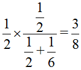
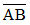

年度合輯：2016 年¶
共收錄 15 篇文章。
1. 105年不動產估價師試題總評(一)¶
發布日期: 2016-09-08
• 一、不動產經濟學
• (一) 第一題考：經濟核理論(the core of economy)，我上課時有特別提及，詳見我的書：《土地經濟學(圖形分析)》(第8版)，P6-73，書上題目為「試以經濟核(The Core of the economy)分析不動產交易之互利效果？」
• (二) 第二題考：地租究竟是一種剩餘或機會成本。我在上課時有深入分析，詳見前揭書，P2-38，書上題目為「試以機會成本觀念解釋經濟地租，地租是一種生產剩餘，亦或是一種生產成本？」
• (三) 第三題考：土地所有權人的管理策略，對土地市場之影響。我在上課時有劃圖分析，詳見前揭書，P1-86，書上題目為「規劃管制下土地所有權人行為選擇結果，使得土地市場中計畫供給量與市場供給量不一，致對土地市場地價產生之影響為何？請輔以經濟圖形闡述之。」
• (四) 第四題考：稅資本化效果、持有成本效果、固定成本效果、無負擔效果。我在上課時有詳細解說，詳見前揭書，P4-25，書上題目為「對財產(土地與房屋)課稅的提高或降低會影響到土地不動產的投資、開發、使用與價值。請從資本化(capitalization)、持有成本(holding-cost)、固定成本(fixed-cost)與無負擔(unburdening effect)等方面來加以說明到底會產生什麼樣的影響？」
總之，今年這四題在我的書都找得到，而且我上課就是以該書為教材。我的土地經濟學課程在今年12月開課，一年只上一次，請學生把握，我有自信：「如果要學好土地經濟學，非上我的課不可。」因為國內能把土地經濟學教得如此精彩，如此深入，非我莫屬。我不是驕傲，而是我的用心教，讓我無法謙虛。
• 二、不動產估價實務
說到不動產估價實務，不得不佩服我抓題精準。今年我給同學二題的模擬試題，其中一題就是估計合建分配比例。說實在的以前從沒考過此種題型題目，今年第一次出現。如果考生未事前練習，現場無法解出。因為我有從事估價實務，知道哪幾種類型題目尚未出題，我的學生真是得天獨厚。不動產估價實務只考一題，一題就一百分，就是因為這一題決定今年上榜與否，重要性由此可見。¶
注：本文圖片存放於 ./images/ 目錄下
2. 105年不動產估價師試題總評(二)¶
發布日期: 2016-09-15
• 三、不動產投資分析
不動產投資分析是讓考生最頭痛的一科，主要是考二題至三題的計算題。算對就滿分，算錯就零分。還好今年的計算題蠻簡單的，一題在計算淨現值（NPV）及獲利能力指數（PI），另一題在計算購屋貸款。其他的申論題如次級房屋貸款、二胎房貸、負攤還等皆是考古題。總之，今年考生可以在本科拿到高分。說實在的，準備這科不宜在家閉門造車，因為本科涉及很多數學公式及統計原理。我在上課時會告訴同學這些數學公式及統計原理的背後意義。
• 四、不動產估價理論
今年的不動產估價理論三題容易，一題較難。
• (一) 第一題考：路線價估價法，我上課講得非常詳細，尤其是深度指數表編製的注意事項及台灣深度指數表的評論。詳見我的書：《不動產估價（財務分析）》（第6版），P6-10~P6-11。
• (二) 第二題考：低度利用住宅，以不動產估價原則加以評論。本題不難，把不動產估價的相關原則套進去，就對了。亦即本題違反不動產估價之均衡原則、適合原則、收益遞增遞減原則及最有效使用原則等。
• (三) 第三題考：計量模型分析法。本題直接以不動產估價技術規則第19條第7款及第20條作答。本題要拿高分，須加以申論。因涉及統計原理，我上課有特別加以解釋，就把我上課講解的內容寫進去，就對了。
• (四) 第四題考：歷史建築的估價方法。這題 最難，實務上很少碰觸。此題讓我想起，歷史建築的價值，屬於非市場價值，故用非市場價值估價方法來作答，詳見我的書：《不動產估價理論》（第14版），P7-103。¶
注：本文圖片存放於 ./images/ 目錄下
3. 不動產經紀人考試命題大綱今年增加房地合一稅¶
發布日期: 2016-09-22
考選部於今年7月27日公告修正不動產經紀人考試「土地法與土地相關稅法概要」科目之命題大綱，增加「所得稅法及其施行細則(不動產交易部分)」，亦即增加房地合一稅。如同地政士考試今年增加房地合一稅，今年立馬考出「所得稅法對於個人之房屋、土地交易所得稅之稅率規定為何？」同理，今年不動產經紀人考試一定會出房地合一稅相關試題！例如：一、房屋、土地交易，在何種情形下，免納所得稅？二、自住房地出售，所得稅有何優惠？三、試述個人出售自住房屋、土地，有關所得稅重購退稅之規定？
甚至有可能考計算題，例如：
甲個人於民國104年10月買入一間店面，買入價格800萬元，買入時之移轉現值20萬元。嗣於民國105年11月賣出，賣出價格1,500萬元，賣出時之移轉現值30萬元。104年10月至105年11月之物價指數105。試問甲應繳納多少土地增值稅及所得稅？
答： 土地增值稅：前次移轉現值：20105%=21本次移轉現值：30土地漲價總數額：30-21=9土地增值稅：920%=1.8所得稅：支付必要費用按成交價5%計。房地交易所得餘額：1500-800-15005%-9=616所得稅：61635%=215.6甲應繳納土地增值稅1.8萬元，應繳納所得稅215.6萬元。¶
注：本文圖片存放於 ./images/ 目錄下
4. 不動產經紀人考試被考生忽略的一題¶
發布日期: 2016-09-29
內政部於民國105年6月23日公告「房屋租賃定型化契約應記載及不得記載事項」，並自民國106年1月1日生效。準此，「房屋租賃定型化契約應記載及不得記載事項」雖未生效施行，但已經政府公布，故得列入今年不動產經紀人考試的內容，考生應予留意。
今年「不動產經紀相關法規概要」一科，如果出現「何謂定型化契約、定型化契約條款、個別磋商條款？依據民國105年6月23日內政部公告之『房屋租賃定型化契約應記載及不得記載事項』，說明其不得記載事項之內容」？
【解答】
• (一) 定型化契約：指以企業經營者提出之定型化契約條款作為契約內容之全部或一部而訂立之契約。
• (二) 定型化契約條款：指企業經營者為與多數消費者訂立同類契約之用，所提出預先擬定之契約條款。定型化契約條款不限於書面，其以放映字幕、張貼、牌示、網際網路、或其他方法表示者，亦屬之。
• (三) 個別磋商條款：指契約當事人個別磋商而合意之契約條款。
• (四) 房屋租賃定型化契約不得記載事項：
-
不得約定拋棄審閱期間。
-
不得約定廣告僅供參考。
-
不得約定承租人不得申報租賃費用支出。
-
不得約定承租人不得遷入戶籍。
-
不得約定應由出租人負擔之稅賦，若較出租前增加時，其增加部分由承租人負擔。
-
出租人故意不告知承租人房屋有瑕疵者，不得約定排除民法上瑕疵擔保責任。
-
不得約定承租人須繳回契約書。
-
不得約定違反法律上強制或禁止規定。
想一想，上開試題是不是被考生忽略但非常重要的一題。基此，我計畫於不動產經紀人總複習時，臚列土地法及土地相關稅法概要、不動產經紀相關法規概要、不動產估價概要這三科「應出但尚未出的重要考題」，敬請考生期待，並歡迎加入來勝不動產經紀人總複習班。¶
注：本文圖片存放於 ./images/ 目錄下
5. 哪一種考試會考「國土計畫法」？¶
發布日期: 2016-10-06
我國土地使用計畫的最上位計畫為國土計畫，而國土計畫所依據之法律為國土計畫法。
國土計畫法於今年（即民國105年）1月6日總統公布，於今年5月1日施行。惟須俟其配套措施完成（即國土功能分區圖公告），始取代現行之土地使用計畫與管制（即現行之區域計畫法）。
不動產經紀人考試之土地法考試範圍為土地法、平均地權條例及其施行細則、土地徵收條例、非都市土地使用管制規則、區域計畫法、都市計畫法，地政士考試之土地法規考試範圍為土地法及其施行法、平均地權條例及其施行細則、土地徵收條例及其施行細則、地政士法及其施行細則。綜上，不動產經紀人及地政士之考試範圍均不包括國土計畫法，故出題老師為避免命題引起爭議，會儘量不出國土計畫法。由此可知，不動產經紀人考試與地政士考試考出國土計畫法之機率不大。
然而，公務人員之高普考、地方政府特考，考試範圍未明列法規名稱，故考出國土計畫法之機率頗大。
從國土計畫法公布至今之相關試題共二題：
105年鐵路人員高員三級「土地政策」：
◎國土計畫法第1條規定：「為因應氣候變遷，確保國土安全，保育自然環境與人文資產，促進資源與產業合理配置，強化國土整合管理機制，並復育環境敏感與國土破壞地區，追求國家永續發展，特制定本法。」請問為因應氣候變遷，國土計畫內容宜考量那些土地政策？（參考解答：國土計畫法第6條）
105年高考三級「土地政策」：
◎國土計畫法歷經多年研議於105年1月6日總統公布，並於105年5月1日實施，推動制定本法之政策目的為何？又四大國土功能分區及其分類之劃設原則為何？請說明之。 （參考解答：國土計畫法第1條、第20條及第21條）
國土計畫法甫公布施行，所以如果考國土計畫法會出大塊題目，諸如：
-
試述國土計畫之意義、種類及其功能分區？
-
試依國土計畫法說明各國土功能分區及其分類之劃設原則及土地使用原則？
-
何謂成長管理？國土計畫之規劃基本原則為何？
-
試比較依據區域計畫法之國土計畫與依據國土計畫法之國土計畫，有何差異？
-
依國土計畫法規定，主管機關審議申請使用許可案件，經審議符合何種條件，得許可使用？
上面解答請參閱：許文昌編著，土地法規（第17版），P4-236至P4-243。¶
注：本文圖片存放於 ./images/ 目錄下
6. 讀書方法之建議¶
發布日期: 2016-10-13
善讀書者，著重於體系之建立；不善讀書者，著重於枝節之背誦。前者先建立體系(如土地使用計畫體系、政策地價體系等)，由樹幹再延伸至枝葉。後者直接進入枝葉，鑽牛角尖，最後迷失於森林。
何以有的學生在學習時著重體系，有的學生在學習時著重枝節，這與老師授課有關。如果老師授課強調體系，自然而然學生就會從體系切入。如果老師授課強調枝節，自然而然學生就會從枝節切入。基上，我個人上課方法就是採取系統教學法。
好書逗陣相報
最近，我寫出一本很棒的估價用書，書名為「不動產估價體系」，元照出版。這本書是我從事估價實務多年的經驗結晶，見解獨到。值得推薦的是，書中第二編將「不動產估價技術規則」逐條釋義，對參加考試同學幫助很大。¶
注：本文圖片存放於 ./images/ 目錄下
7. 海洋之子-海域區及海域用地之使用與管制¶
發布日期: 2016-10-27
非都市土地原為10種分區、18種用地，現變更為11種分區、19種用地。亦即新增海域區及海域用地。我國四周環海，以海洋立國，過去只重視陸域部分之使用及管制，未來除陸域部分外，應加強海域部分之使用及管制。因此，有關海域之考題，會在今年地方政府、明年高普考之「土地法規」、「土地利用概要」及明年不動產估價師之「土地利用法規」出現。¶
注：本文圖片存放於 ./images/ 目錄下
8. 地價稅之變革¶
發布日期: 2016-11-03
法規可能已修正
本文發布（2016-11-03）後，文中引用的 平均地權條例第14條（2017-05-10 修正）有修正，內容可能與現行規定不同，請以全國法規資料庫的現行條文為準。
地價稅於本月（即11月）開徵，由於今年有重新規定地價（規定地價每三年一次），故今年地價稅負擔與去年不同。據報載今年地價稅較去年平均增加三成，再加上今年房屋稅較往年加重，造成民眾稅負突然增加。因此，有改革地價稅之議，主要有二：
• 一、重新規定地價之期間，由三年縮短為二年。此舉只要修正平均地權條例第14條即可，簡單容易，故爭議較少。
• 二、地價稅與房屋稅合併課稅，合併後之名稱暫定為不動產稅。此舉茲事體大，現行地價稅與房屋稅分開課稅之理由如下：
-
土地與建物之性質不同：土地隨時間而增值，建物隨時間而折舊，故宜分開定價，分別課稅。
-
土地與建物之課稅目的不同：土地政策在鼓勵土地投資，打擊土地投機，故地價稅之輕重有其政策功能。學理上認為地價稅應從重，房屋稅應從輕。如果土地與建物合併課徵不動產稅，對土地課稅之政策功能將因而喪失。
-
土地與建物之評估方法不同：如果土地與建物分開課稅，評估土地可採比較法及土地開發分析法，評估建物可採成本法，此時估價兼顧地坪與建坪。如果土地與建物合併課稅，評估房地可採比較法，此時估價只著重建坪，而忽略地坪。
-
地價稅與房屋稅之理論基礎不同：地價稅屬於收益稅性質，對素地價格課稅，不及於土地改良物，以鼓勵土地投資；相對地，土地閒置，其地價稅不因而減輕，反而應課徵空地稅或荒地稅（現未開徵），故地價稅有持有成本及固定成本之課徵效果。至於房屋稅屬於財產稅性質，興建愈高，房屋稅愈重，反而不利於土地利用。
綜上，土地法第145條規定：「土地及其改良物之價值，應分別規定。」道理在此。¶
注：本文圖片存放於 ./images/ 目錄下
9. 精準地價與自動估價系統¶
發布日期: 2016-11-10
據2016年11月3日自由時報刊載，內政部研擬以實價大量查估運算而得之「精準地價」，取代現行公告地價、公告土地現值，以回歸市場機制。換言之，採行自動估價系統(Automated Valuation Model，簡稱AVM)進行不動產估價作業，更精準反應市價，減少人為控制因素。
所稱自動估價系統，指應用計量模型，藉助電腦運算，查估多數量不動產價格。其方法首先蒐集交易實例(即樣本)，再以交易實例建立計量模型，最後以計量模型推估不動產價格。
採行運用自動估價系統之困難如下：
• (一) 樣本數太少：雖然現行內政部已實施不動產交易實價登錄制度，但有些地方交易不熱絡，缺乏實例資料。另外，內政部之實價登錄資料，未盡詳細，有的變數資料缺乏，致應用效果受限。
• (二) 異質性太大：不動產之異質性愈大，AVM愈難應用。公寓大樓應用效果最佳，其次為透天房屋，再次為純土地，特殊產品(如百貨公司、醫院、旅館等)最難應用。
• (三) 影響因子太多：影響不動產價格之因子很多，建立模型時，將選擇一些影響因子，捨棄另一些影響因子。如果捨棄者為主要影響因子，則計量模型之解釋能力將變差。另外，有的影響因子難以量化造成應用困難。
綜上，實施精準地價及推動自動估價系統，還有一段很長的路要走。¶
注：本文圖片存放於 ./images/ 目錄下
10. 區段徵收制度之存廢問題¶
發布日期: 2016-11-17
最近，鑑於區段徵收之爭議不斷，有立法委員主張廢除區段徵收制度，一律回歸適用土地徵收（即一般徵收）之規定。
我個人認為區段徵收之最大問題在於下列五點：
-
違反土地徵收之必要性原則：土地徵收條例第3條規定，徵收之範圍，應以其事業所必須者為限。準此，需地機關舉辦之事業需地10公頃，徵收之面積應為10公頃。然，現行區段徵收舉辦之事業需地10公頃，為使原土地所有權人領回抵價地，故擴大徵收面積，可能高達20公頃。
-
抵價地補償偏離市價徵收補償標準：區段徵收之補償方式有兩種，一為現金補償，另一為抵價地補償。抵價地為現金補償之替代物。換言之，領回抵價地之價值應與土地徵收條例第30條之市價補償標準相符。然，區段徵收之領回抵價地面積，係先決定抵價地總面積，即抵價地總面積為區段徵收總面積之40%～50%；然後再由各所有權人按應領補償地價與區段徵收補償地價之比率分享抵價地總面積。因此，領回抵價地之多寡與市價現金補償無關。換言之，土地所有權人領回抵價地之價值有可能大於被徵收土地之地價，亦有可能小於被徵收土地之地價。
-
實施區段徵收之原因未嚴格界定：依土地徵收條例第4條第1項規定，得為區段徵收之情形非常籠統，諸如非都市土地實施開發建設等是，造成區段徵收之浮濫。
-
各方爭食變更利益：一般而言，區段徵收涉及土地用途變更，如都市土地農業區或保護區變更為建築用地、工業區變更為住宅區或商業區、非都市土地開發為建築用地等是。龐大之土地變更利益，政商勾結，分食大餅。
-
地方政府處分土地未受監督：區段徵收之實施主體一般為直轄市、縣（市）政府，而直轄市、縣（市）政府處分開發完成後之可建築用地，不受土地法第25條之限制（參見平均地權條例第7條）。換言之，直轄市、縣（市）政府處分區段徵收而取得之土地，不須受該管民意機關之同意及行政院之核准。此舉造成直轄市、縣（市）政府樂於採用區段徵收開發土地，以便上下其手。
以上種種問題如未獲改善，廢除區段徵收制度，一律回歸適用土地徵收規定，有何不可！¶
注：本文圖片存放於 ./images/ 目錄下
11. 105年不動產經紀人試題總評¶
發布日期: 2016-11-24
• 一、不動產估價概要：
今年申論題共二題，一題考折舊路徑，另一題考資本利息綜合利率。前者應繪圖說明，後者附實例計算。今年我個人之總複習方式採「考古題」與「應出但尚未出之重要考題」二軌並行。前者由學生自行閱讀「不動產經紀人申論題歷屆試題精解」，果然第二題就與95年之考古題相仿；後者由我針對本科選出10題，第一題就出自第2題「何謂折舊？造成折舊之因素有那些？折舊路徑之種類？」，果然神準！今年測驗題共40題，大都出自不動產估價技術規則，簡單容易，應可拿高分。
• 二、土地法與土地相關稅法概要：
今年申論題共二題，一題考不得私有之十種土地，另一題考累進起點地價及地價稅之稅率。同樣地，第一題為考古題，與88年之考古題相仿，第二題就出自我針對本科選出「應出但尚未出之重要考題」共12題的7題「試述地價稅之稅率結構？」，真是巧合！今年申論題共40題，有22題實例題，對參加普考級同學的實力而言，有夠殺！有夠澀！還好，選擇題如果不會可以猜，猜中機率25％。
• 三、不動產經紀相關法規概要：
今年申論題共二題，一題考應經紀人簽章之文件，另一題考不動產說明書有關土地（素地）「使用管制內容」之應記載事項。同樣地，第一題為考古題，與90年第1次特考相仿，第二題為從未出過之冷僻考題。平心而論，以上所述三科六題申論，只有這一題未抓到。須提醒同學的是，仍要用所學的相關知識填滿，試想「土地使用管制」，不外是都市土地之分區及非都市土地之11種分區19種用地及有關建蔽率與容積率等，從這個角度去發揮就是了。今年測驗題共40題，大都從四大法律之法條直接命題，較無艱澀冷僻題目。
總之，今年之不動產估價概要、不動產經紀相關法規概要二科較容易，土地法與土地相關稅法概要，民法概要二科較困難，截長補短，現在只剩下國文一科決勝負。
最後，預祝各位考生金榜題名。¶
注：本文圖片存放於 ./images/ 目錄下
12. 自動穩定機制¶
發布日期: 2016-12-01
經濟景氣時，人民之所得提高，所得稅增加，抑制經濟過度繁榮，避免通貨膨脹惡化。相反地，經濟不景氣時，人民之所得降低，所得稅減少，移轉性支付(如失業救濟金等)增加，抑制經濟過度蕭條，避免失業擴大。由此可知，所得稅對經濟活動具有自動穩定機制。現在，以自動穩定機制來探討地價稅及土地增值稅。地價稅為持有稅，土地增值稅為移轉稅。
地價稅之稅基源自公告地價。公告地價每三年規定一次，且規定地價所蒐集之實例為過去一年內買賣實例。當房地產景氣時，公告地價僅微幅調整，百姓之地價稅負擔增加有限。當房地產不景氣時，公告地價始大幅調整，百姓之地價稅負擔大幅加重。因此，造成人民反彈，也造成稅負不公平負擔。
土地增值稅之稅基源自公告土地現值。公告土地現值每年規定一次，且土地現值查估所蒐集之實例為過去一年內買賣實例。當房地產景氣時，為避免調高公告土地現值帶動土地市價上漲，公告土地現值調幅有限。當房地產不景氣時，調高公告土地現值不致於帶動土地市價上漲，此時始大幅調高公告土地現值。因此，造成土地增值稅之政策效果(如打擊投機)無法發揮，也造成享受增值者未負擔土地增值稅，而由接手之未享受增值者負擔，稅負不公平負擔。
綜上，公告地價及公告土地現值之調整存在時間落後，造成人民觀感不佳；更嚴重的是由於公告地價及公告土地現值調整深受人為干擾(如上級政策指示、地價評議委員會之審議等)，造成地價稅及土地增值稅不具有自動穩定機制，反而有反穩定現象。
好課報報
參加106年地政高考、不動產估價師考試的同學請勿錯過了！我的第一堂課於105年12月18日（星期日）早上9：30開課，一連貫密集的正規課程，接著總複習加強課程，直到明年的考前為止。只有實實在在的耕耘，才會有豐碩的上榜成績。讓我們一起加油吧！
另外，提醒同學105年12月14日（星期三）18：30舉辦「不動產時事專題研討」，主題：「評析最近二年之大法官解釋－釋字第731號、第732號及第739號」，歡迎同學踴躍參加。¶
注：本文圖片存放於 ./images/ 目錄下
13. 105年地方政府考試的二件奇妙事¶
發布日期: 2016-12-15
• 一、我在今年11月17日臉書發表：「區段徵收制度之存廢問題」，今年12月11日地方政府三等考試土地政策的第四題：
近年來土地徵收的問題爭議不斷，其中重大的爭議之一為徵收過多或過於浮濫。請問土地徵收的要件為何？試從土地徵收的要件分析區段徵收的存廢。(25分)。
• 二、我在今年9月的新版土地法規(第17版)新增一題實例題(在該書P8-178第160題)：
甲、乙二人共有一筆土地，應有部分各二分之一。嗣甲死亡，應有部分由其子A、B、C三人公同共有繼承登記，應繼分各三分之一。不久，A、B二人未經C之同意，將A、B、C三人公同共有之應有部分出售於丙，其效力為何？何人有優先購買權？
答：(一)共有土地之應有部分為公同共有者，該應有部分之處分，得依土地法第三十四條之一第一項規定辦理。準此，A、B二人未經C之同意，則共有人數過半數及其潛在應有部分(即應繼分)合計過半數之同意，將A、B、C三人公同共有之應有部分出售於丙，其買賣為有效。
• (二) 乙及C均有優先購買權。乙係該地共有人，基於土地法第三十四條之一第四項規定，對出售之應有部分有優先購買權。C係出售應有部分之不同意公同共有人，對出售應有部分全部有優先購買權。二人同時主張時，則按應有部分及潛在應有部分(即應繼分)之比率定之。即乙優先購買八分之三，C優先購買八分之一。乙：[圖片1]C：[圖片2]
今年12月10日地方政府三等考試土地法規的第一題，與上開實例題相仿：
甲與乙兩人分別共有一地，甲之應有部分為四分之三，乙之應有部分為四分之一(下稱系爭土地)，嗣後乙死亡，其應有部分由丙與丁兩人繼承，丙之應繼分為五分之四，丁則為五分之一。……。當丙出賣系爭土地時，倘若甲與丁均行使先買權時，如何處理？試分述之。(25分)
答：丙出賣系爭土地，甲與丁均行使先買權，處理方式如下：甲及丁均有優先購買權。甲係該地共有人，基於土地法第34條之1第4項規定，對出售之應有部分有優先購買權。丁係出售應有部分之不同意公同共有人，對出售應有部分全部有優先購買權。二人同時主張時，則按應有部分及潛在應有部分（即應繼分）之比率定之。即甲優先購買六十四分之十五，丁優先購買六十四分之一。甲：[圖片3]丁：[圖片4]
以上所談的二件事，真的很奇妙！
文章圖片¶



14. 從105年12月9日公布之大法官解釋第742號談起¶
發布日期: 2016-12-22
司法院大法官解釋之效力在憲法之下、法律之上，且其解釋常突破傳統框架，引領進步的法學觀念。因此，司法院大法官解釋文常為命題的焦點。
茲以司法院釋字第156號及第742號為例，設計明年可能會出現的考題如下：
◎都市計畫之新訂、通盤檢討及個案變更，影響人民權益甚鉅，人民對之得否提起訴願或行政訴訟？試依司法院釋字第156號及第742號解釋意旨申論之。
【解答】
都市計畫分為新訂與變更。都市計畫變更又分為通盤檢討(即定期變更)與個案變更(即臨時變更)。茲分述如下：
• (一) 都市計畫之新訂：
-
都市計畫新訂屬於法規性質，非屬行政處分，人民對之不得提起訴願或行政訴訟。
-
都市計畫之訂定，影響人民權益甚鉅，立法機關應於司法院釋字第742號解釋公布之日(105年12月9日公布)起二年內增訂相關規定(增訂於都市計畫法)，使人民得就違法之都市計畫，認為損害其權利或法律上利益者，提起訴訟以資救濟。如逾期未增訂，自該解釋公布之日起二年後發布之都市計畫，其救濟應準用訴願法及行政訴訟法有關違法行政處分之救濟規定。
• (二) 都市計畫之通盤檢討：
-
原則：(1)都市計畫通盤檢討屬於法規性質，非屬行政處分，人民對之不得提起訴願或行政訴訟。(2)都市計畫之定期通盤檢討變更，影響人民權益甚鉅。立法機關應於司法院釋字第742號解釋公布之日(105年12月9日公布)起二年內增訂相關規定(增訂於都市計畫法)，使人民得就違法之都市計畫，認為損害其權利或法律上利益者，提起訴訟以資救濟。如逾期未增訂，自該解釋公布之日起二年後都市計畫之定期通盤檢討變更，其救濟應準用訴願法及行政訴訟法有關違法行政處分之救濟規定。
-
例外：都市計畫通盤檢討，如其中具體項目有直接限制一定區域內特定人或可得確定多數人之權益或增加其負擔者，有行政處分之性質，應許其就該部份提起訴願或行政訴訟以資救濟。申言之，由於定期通盤檢討所可能納入都市計畫內容之範圍並無明確限制，其個別項目之內容有無直接限制一定區域內特定人或可得確定多數人之權益或增加負擔，不能一概而論。訴願機關及行政法院自應就個案審查定期通盤檢討公告內個別項目之具體內容，判斷其有無個案變更之性質，亦即是否直接限制一定區域內特定人或可得確定多數人之權益或增加負擔，以決定是否屬行政處分之性質及得否提起行政爭訟。如經認定為個案變更而有行政處分之性質者，基於有權利即有救濟之憲法原則，應許其就該部分提起訴願或行政訴訟以資救濟。
• (三) 都市計畫之個案變更：主管機關變更都市計畫(指個案變更)，係公法上之單方行政行為，如直接限制一定區域內人民之權利、利益或增加其負擔，即具有行政處分之性質，其因而致特定人或可得確定之多數人之權益遭受不當或違法之損害者，自應許其提起訴願或行政訴訟以資救濟。
以上所舉之題目，是不是非常漂亮！希望參加明年考試同學的留意本題。¶
注：本文圖片存放於 ./images/ 目錄下
15. 都市更新整合不易成功之原因¶
發布日期: 2016-12-29
推動都市更新過程中，有的住戶較積極，有的住戶較消極。前者稱為積極型住戶，後者稱為消極型住戶。
-
積極型住戶，配合度較高，希望能促成都更案，故其參與都市更新之意願曲線，彈性較大，如圖之[圖片1]。
-
消極型住戶，配合度較低，甚至會有拿翹行為，故其參與都市更新之意願曲線，彈性較小，如圖之[圖片2]。
另，實施者因住戶要價愈高，推動都更案之意願愈低；因住戶要價愈低，推動都更案之意願愈高。因此，實施者推動都更案之意願曲線，如圖之[圖片3]。
由[圖片4]與[圖片5]之交點，決定積極型住戶之協商要價為P0。[圖片6]與[圖片7]之交點，決定消極型住戶之協商要價為P1。由此可知，積極型住戶之協商要價較低，消極型住戶之協商要價較高。換個角度分析，相同不動產分配標準，要價低之積極型住戶贊成，要價高之消極型住戶反對，造成都市更新整合不易成功。
[圖片8]
文章圖片¶
